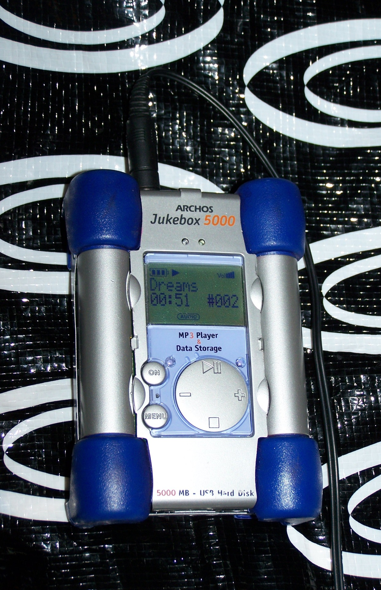
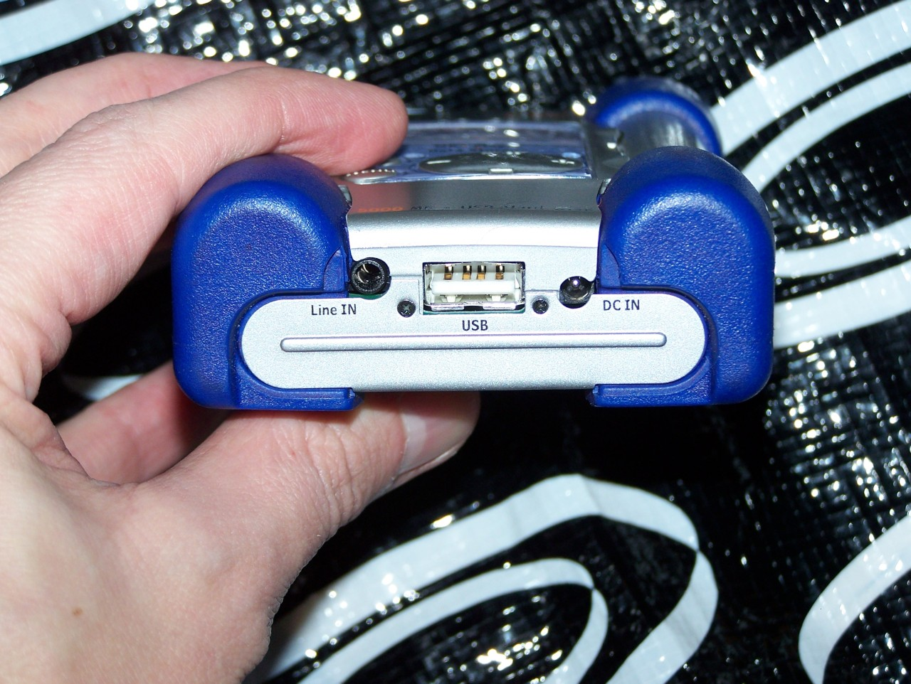
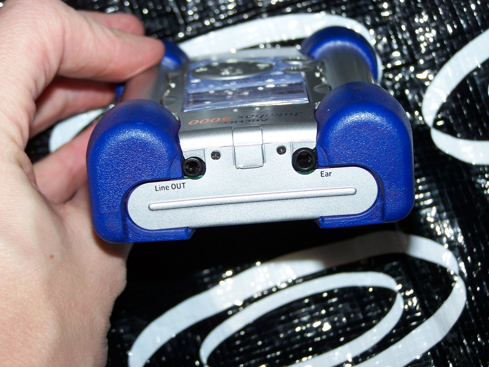

Arcos “Jukebox 5000“ MP3 player, 2002. Credited as being among the first MP3 players with a hard drive rather than flash memory, and also one of the few at the time that was recognised as a USB memory device thus did not require special drivers or software to put music on.
Five gigabytes storage (using a notebook hard drive, thus upgradeable in size with a larger hard drive or a CompactFlash-to-IDE-adaptor), powered by four nickel metal hydride AA cells (so unlike most players with internal batteries, you can replace the rechargable cells easily or use alkalines!) with a life rating of 10 hours, and has pretty decent sound plus can be used as an external hard drive if you can find a USB A to USB A cable (seriously, not a micro-A like most players and cell phones). DJs and people with component systems liked this player because it had a line-out jack in addition to the standard headphone jack.
A Goodwill find that came with 2gb of music, sorted by album, already on it and the thing works… above it’s playing a song from Fleetwood Mac’s Greatest Hits.